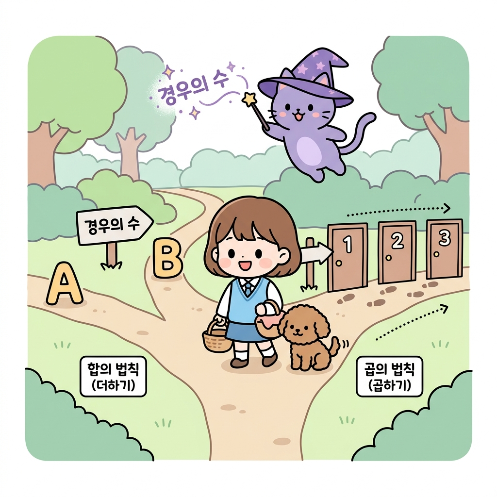
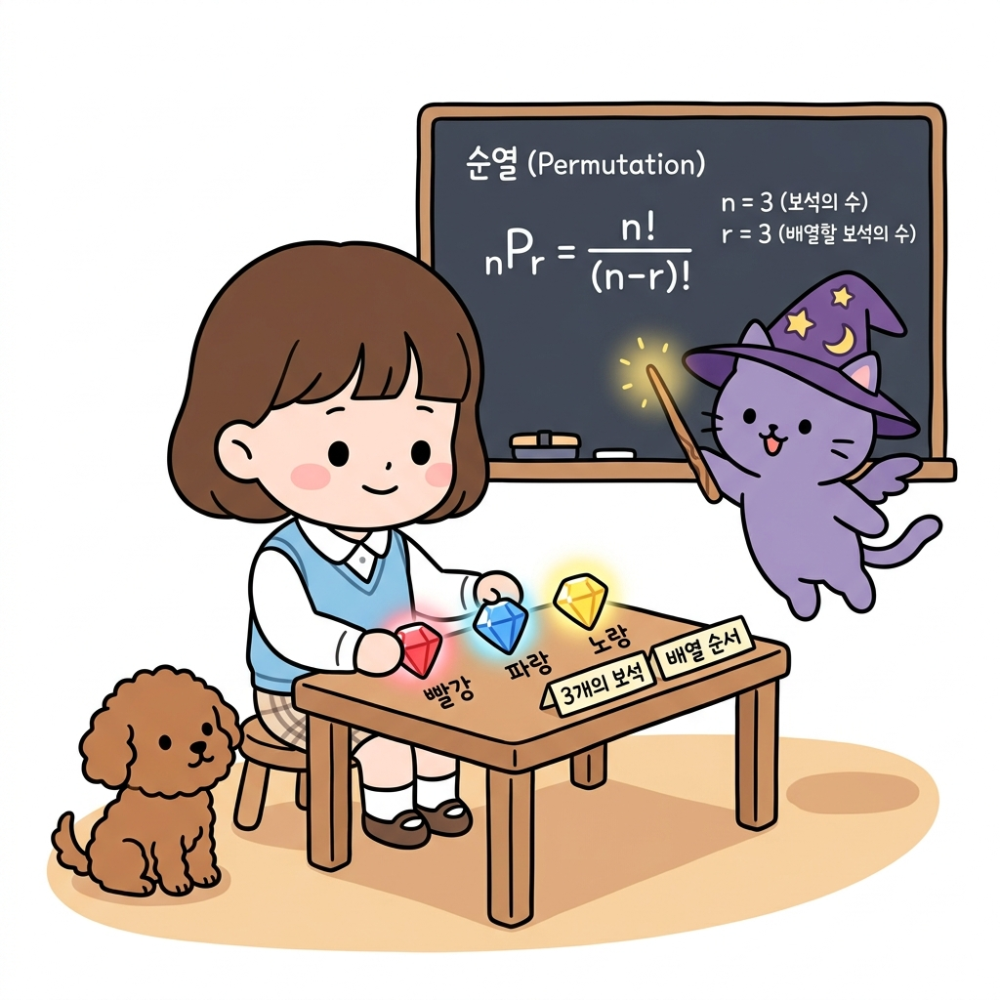
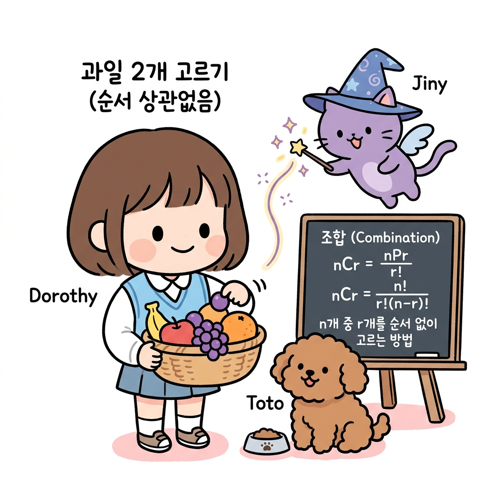

02.8 경우의 수와 순열/조합
이 장에서는 경우의 수와 순열/조합에 관한 기초부터 심화 개념들을 유기적으로 결합하여 학습합니다.
02.8.1 경우의 수와 합의 법칙, 곱의 법칙
경우의 수는 모험 경로에서 우리가 직면할 수 있는 모든 선택지의 수입니다.
“지니! 숲속 갈림길을 만났는데, 어느 길을 골라서 가야 안전하게 보물을 얻을 수 있을까? 그리고 내가 선택할 수 있는 총 경로의 가짓수는 전부 몇 가지야?”
도로시가 바구니를 들고 숲길 중간에서 좌우를 둘러보았습니다. 토토는 발밑에서 두리번거리며 꼬리를 흔들었습니다. 지니는 공중에 요술봉을 휘둘러 갈림길 지도를 입체적으로 띄웠습니다.
“도로시! 갈림길을 지혜롭게 지나가기 위해서는 먼저 우리가 마주할 수 있는 모든 선택지, 즉 경우의 수(Number of Cases)를 정확히 셀 줄 알아야 해. 길을 선택하는 상황에 따라 덧셈을 해야 할지, 곱셈을 해야 할지 결정하는 2가지 규칙이 있단다.”

그림 02-8-1 한 번에 하나만 고를 수 있는 분리된 경로(합의 법칙)와, 차례대로 연이어 가야 하는 순차적 경로(곱의 법칙)의 차이를 이해하는 도로시와 지니, 토토“아! 왼쪽 갈림길 A 또는 B 중 하나를 택할 때는 서로 겹치지 않으니까 단순히 더해서 구하는 합의 법칙이고, 오른쪽 길처럼 1번 문을 통과한 뒤 연이어 2번, 3번 문을 통과해야 할 때는 조합이 만들어지니까 곱해서 구하는 곱의 법칙이구나!”
도로시가 지도를 보며 고개를 끄덕였습니다.
1. 학습 목표
- 사건과 경우의 수의 뜻을 이해한다.
- 동시에 일어나지 않는 두 사건에 대해 합의 법칙을 적용할 수 있다.
- 연이어 일어나는 두 사건에 대해 곱의 법칙을 적용할 수 있다.
2. 핵심 개념
(1) 사건과 경우의 수
- 사건 (Event): 주사위를 던지는 것과 같이, 동일한 조건에서 반복할 수 있는 관찰이나 실험의 결과입니다.
- 경우의 수 (Number of Cases): 사건이 일어날 수 있는 모든 가짓수입니다.
- 예: 주사위 한 개를 던질 때, ‘짝수 눈이 나오는 사건’의 경우의 수는 [2, 4, 6]으로 총 3가지입니다.
(2) 합의 법칙 (Addition Rule)
두 사건 A, B가 동시에 일어나지 않을 때, 사건 A가 일어나는 경우의 수를 m, 사건 B가 일어나는 경우의 수를 n이라고 하면, 사건 A 또는 사건 B가 일어나는 경우의 수는 다음과 같습니다.
- m + n
- 힌트: 또는(Or), ~하거나라는 조건일 때 사용합니다.
(3) 곱의 법칙 (Multiplication Rule)
사건 A가 일어나는 경우의 수가 m이고, 그 각각에 대하여 사건 B가 일어나는 경우의 수가 n일 때, 두 사건 A, B가 동시에(연이어) 일어나는 경우의 수는 다음과 같습니다.
- m × n
- 힌트: 그리고(And), 동시에, ~하고 나서 연이어라는 조건일 때 사용합니다.
3. 실전 예제
예제 1 (합의 법칙)
문제: 도로시네 반에서는 현장 학습 장소로 산 3곳(설악산, 지리산, 월출산) 또는 바다 2곳(해운대, 만리포) 중 한 곳을 선택하려고 합니다. 선택할 수 있는 총 여행지의 경우의 수는 몇 가지인가요?
풀이: 산을 선택하는 사건과 바다를 선택하는 사건은 동시에 고를 수 없습니다. 따라서 합의 법칙을 적용합니다. 경우의 수 = 3 (산) + 2 (바다) = 5가지 정답: 5가지
예제 2 (곱의 법칙)
문제: 도로시는 상의로 흰색, 빨간색, 연두색 블라우스 3벌이 있고, 하의로 핑크색 스커트, 파란색 스커트, 노란색 바지 3벌이 있습니다. 상의와 하의를 각각 하나씩 선택하여 입을 수 있는 옷차림의 총 경우의 수는 몇 가지인가요?
풀이: 상의를 고르는 사건과 하의를 고르는 사건은 연이어 일어나는 사건입니다. 따라서 곱의 법칙을 적용합니다. 경우의 수 = 3 (상의) × 3 (하의) = 9가지 정답: 9가지
02.8.2 경우의 수 심화: 중복이 있는 합의 법칙과 곱의 법칙
선택지가 서로 완전히 분리되어 있지 않고 중복이 존재할 때의 합산 요령을 다룹니다.
“지니! 만약 갈림길 숲길 코스 중에서 겹치는 구간이 존재한다면, 그때는 단순 합의 법칙을 쓰면 안 되는 거지?”
“맞아, 도로시! 겹치는 영역을 생각하지 않고 그냥 다 더해버리면 중복된 원소들을 두 번 세게 되는 오류가 발생한단다. 그래서 겹치는 교집합 부분을 반드시 한 번 빼주어야 해.”
- 중복이 있는 합의 법칙:
경우의 수 = m + n - l (여기서 l은 두 사건이 동시에 겹치는 경우의 수)
- 집합의 원소 개수 공식: n(A ∪ B) = n(A) + n(B) - n(A ∩ B)
02.8.3 팩토리얼과 순서대로 나열하기
서로 다른 대상을 빠짐없이 일렬로 세우는 경우의 수인 팩토리얼(Factorial, 계승)을 배웁니다.
“지니! 내 책상 위에 빨강, 파랑, 노랑 세 개의 신비로운 보석이 있어. 이 보석들을 왼쪽부터 차례대로 배열하는 방법은 총 몇 가지일까?”
도로시가 반짝이는 보석들을 만지작거리며 지니에게 질문했습니다. 토토는 테이블 밑에서 눈을 반짝였습니다. 지니는 요술 칠판에 수식을 적으며 설명했습니다.
“첫 번째 자리에 놓을 수 있는 보석은 3가지, 그 다음 두 번째 자리에는 첫 번째 자리에 놓인 것을 제외한 2가지, 마지막 자리에는 남은 1가지가 오게 되지. 이 연쇄적인 결정을 곱의 법칙으로 계산하면 3 × 2 × 1 = 6가지가 되는데, 이를 수학 기호로 3!(3 팩토리얼)이라고 부른단다.”

그림 02-8-2 3개의 보석을 테이블 위에 나열하는 경우의 수를 통해 팩토리얼 및 순열(3P3) 공식을 학습하는 도로시와 지니, 토토- 팩토리얼 (Factorial, 계승):
1부터 n까지의 모든 자연수를 차례대로 곱한 것을 뜻하며, 기호로 n!이라 씁니다.
n! = n × (n - 1) × (n - 2) × … × 2 × 1
- 참고: 0!은 1로 정의합니다.
02.8.4 순열: 택하여 줄 세우기
서로 다른 n개 중 r개를 선택해 순서를 고려하여 일렬로 줄 세우는 것을 순열(Permutation)이라고 합니다.
- 순열 기호: **n*P*r**
- 계산식: nPr = n × (n - 1) × … × (n - r + 1) (곱하는 수의 개수가 r개) nPr = n! / (n - r)!
“아! 5개의 트로피 중 1등, 2등, 3등 단상에 올릴 트로피 3개를 순서대로 고르는 가짓수는 5P3 = 5 × 4 × 3 = 60가지구나! 뽑는 순서가 결과에 영향을 주는 상황(Order matters)에는 이 순열을 쓰는 거네!”
도로시가 노트를 보며 고개를 끄덕였습니다.
02.8.5 조합: 순서 없이 선택하기
순서와 관계없이 특정 대상을 묶음으로 골라내기만 하는 조합(Combination)을 공부합니다.
“지니! 순열은 순서대로 줄을 세우는 거였잖아. 그렇다면 순서는 전혀 상관없이, 그냥 바구니에서 과일 2개를 묶음으로 쏙 골라내기만 하는 가짓수는 어떻게 계산해?”
도로시가 과일 바구니에서 사과와 포도를 꺼내며 물었습니다. 지니는 칠판에 나눗셈 기호를 그리며 자상하게 설명했습니다.
“그때는 바로 조합(Combination, nCr)을 사용한단다. 순서가 상관없으므로, 일단 순열(nPr)로 나열한 뒤 그 개수들이 자리를 바꾸는 중복 가짓수(r!)만큼 나누어 제외해주면 된단다.”

그림 02-8-3 과일 바구니에서 순서 상관없이 과일 2개를 묶음으로 선택하는 상황을 통해 조합(nCr) 공식의 중복 제거 원리를 파악하는 도로시와 지니, 토토- 조합 공식: nCr = nPr / r! = n! / [ r! × (n - r)! ]
- 조합의 대칭성 성질:
**n*C*r* = *n*C*n-r**
- 직관적 의미: 10명 중 여행에 데려갈 8명을 고르는 가짓수(10C8)는 데려가지 않고 제외할 2명을 고르는 가짓수(10C2)와 수학적으로 완전히 대칭을 이룹니다.
“와! 20C18 같은 큰 숫자는 대칭성 성질을 이용해 20C2로 바꾸면 식이 훨씬 간단해지는구나! 수학은 참 영리해!”
도로시가 박수를 치며 활짝 웃었습니다.
02.8.6 실전 예제
문제 1 (순열과 조합 계산)
학생 10명 중 회장, 부회장 2명을 뽑는 경우의 수(A)와, 대표 2명을 뽑는 경우의 수(B)를 각각 계산하시오.
풀이:
- 회장과 부회장은 직책(순서)의 구분이 있으므로 순열입니다: A = 10P2 = 10 × 9 = 90가지
- 대표 2명은 직책(순서)의 구분이 없으므로 조합입니다: B = 10C2 = (10 × 9) / (2 × 1) = 45가지
정답: A = 90가지, B = 45가지
02.8.7 핵심 요약
- 합의 법칙은 동시에 일어나지 않는 사건의 합산(Or)이며, 곱의 법칙은 연속적/동시적으로 일어나는 조합(And)의 곱산이다.
- 순열(nPr)은 서로 다른 n개 중 r개를 순서를 고려하여 나열하는 경우의 수이며, 조합(nCr)은 순서 없이 선택하여 묶음을 만드는 경우의 수이다.
- 조합은 순열의 값에서 중복되는 나열 수인 r!을 나눈 값을 가지며, 대칭성 성질인 **n*C*r* = *n*C*n-r**을 적극 활용하면 큰 수의 조합 계산이 단순해진다.